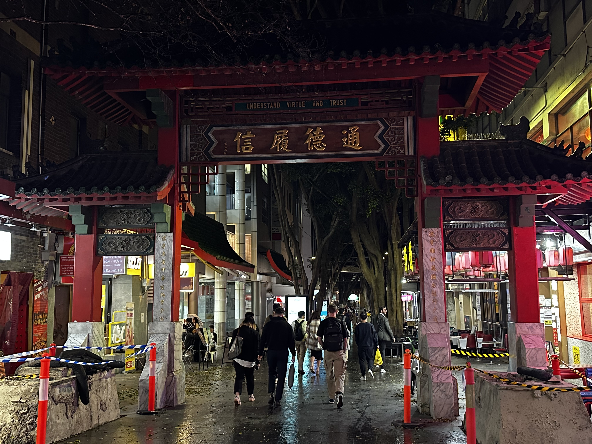
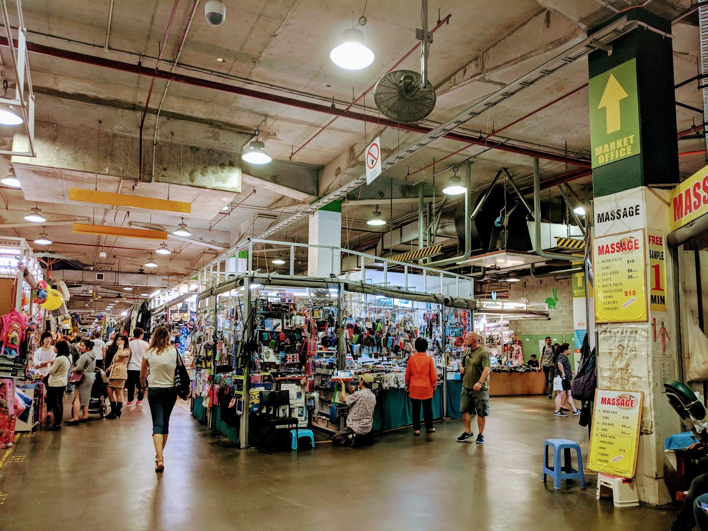
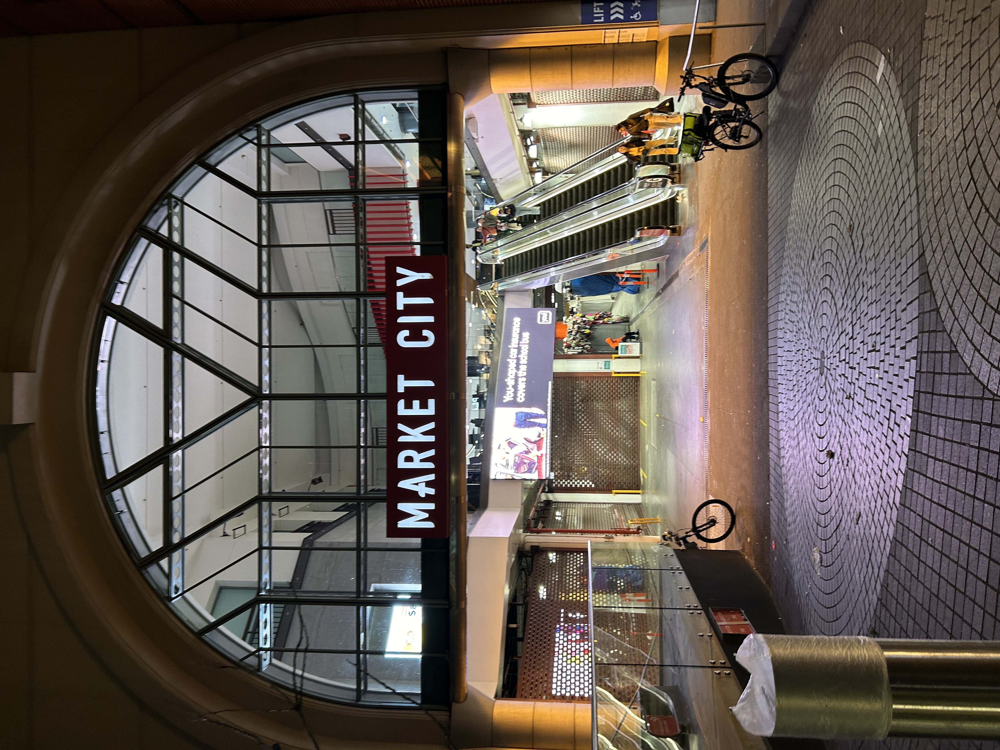
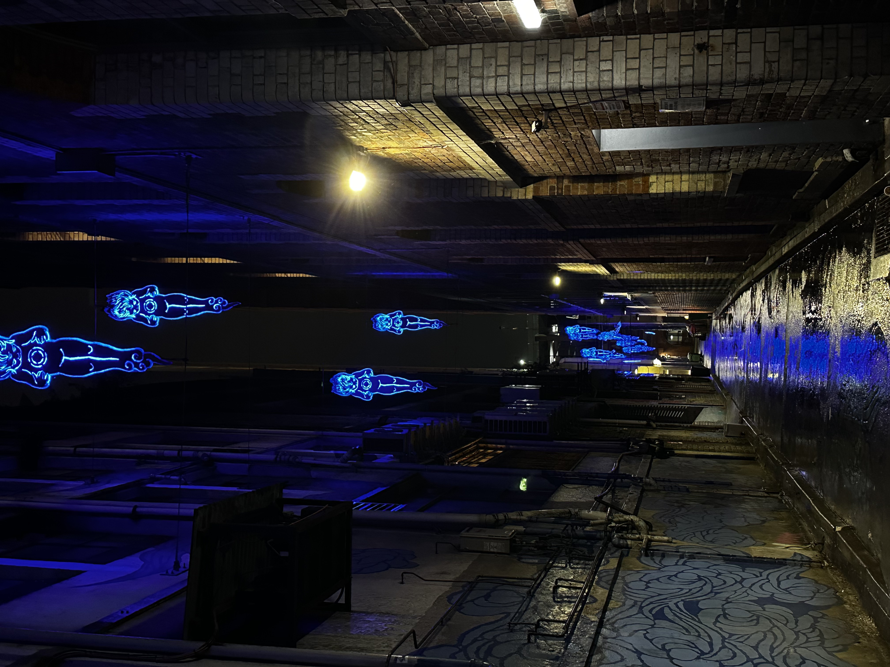
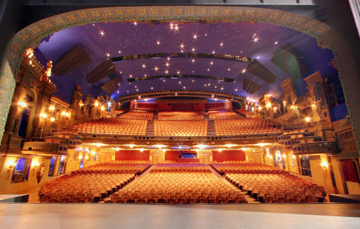
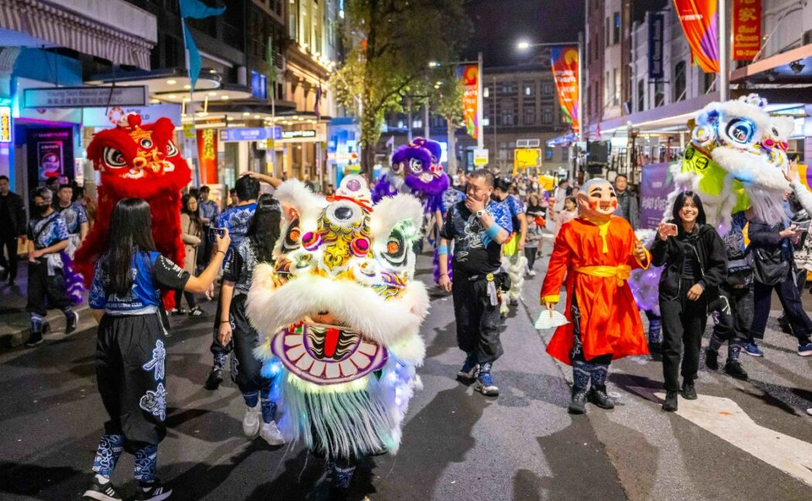

Chinese Garden of Friendship
The Chinese Garden of Friendship in Darling Harbour is a serene escape from the city’s busy streets. Designed to reflect Chinese horticulture, the garden offers pathways winding around tranquil ponds, lush greenery, and traditional pavilions. Built as a symbol of friendship between Sydney and Guangzhou, the garden also has an on-site teahouse where guests can sip traditional Chinese tea and savor authentic dumplings, adding a touch of cultural heritage to their experience.

Dixon Street Walk
The pedestrian-only Dixon Street is the heart of Chinatown and a lively area to stroll, especially during Lunar New Year celebrations. During this festive time, Dixon Street becomes a vibrant showcase for traditional Chinese, Korean, Vietnamese, and Mongolian customs, with parades, lantern displays, and dragon dances marking the celebration of the lunisolar New Year. The street itself is adorned with Chinese-style archways and decorative lanterns, creating an immersive experience that highlights the cultural essence of Chinatown. Regularly bustling with locals and tourists alike, Dixon Street offers a fantastic range of shops, herbal medicine stores, and specialty outlets to explore.

Paddy's Market
Located in the heart of Chinatown, Paddy's Market offers a vast array of stalls with everything from souvenirs, clothing, and accessories to fresh produce and specialty items. Its lively, bustling atmosphere makes it a key spot for discovering local wares and exploring unique items. The market, with its roots tracing back to colonial Sydney, operates from Wednesday to Sunday and offers a rare glimpse into a vibrant blend of local and international shopping culture. Visitors are encouraged to arrive early to get the best selection of goods.

Market City
Market City is a multi-level shopping and entertainment complex housing an array of stores that include both factory outlets and Asian specialty shops. This bustling hub offers unique retail experiences and Asian grocery items, making it a great destination for shoppers. It’s also home to various entertainment options, including arcades and the bustling Paddy’s Market on the ground floor. It's an all-in-one location where visitors can shop, play, and explore local and international brands, providing a dynamic experience!

Kimber Lane & Various Art Installation
Jason Wing’s “In Between Two Worlds” art installation on Kimber Lane is another standout. With the blue clouds painted on the walls and illuminated silver figures that hover above, this artwork brings a surreal touch to the cultural district, celebrating Chinatown’s dynamic blend of tradition and contemporary art. Nearby, the Golden Water Mouth symbolizes the harmonious connection between nature and the urban environment. Created by Lin Li, this sculpture is cherished by local communities and adds a touch of traditional Chinese symbolism to the modern cityscape.

Capitol Theatre
The Capitol Theatre, located on Campbell Street, is a historic and heritage-listed theater renowned for its stunning architecture and world-class performances. Opened in the early 20th century, the theater showcases an array of live shows, including musicals, concerts, and other theatrical performances. The venue’s opulent interior design adds to its charm, providing an unforgettable experience for theatre lovers and casual visitors alike.

Chinatown Night Market
The Chinatown Night Market is a vibrant experience filled with food stalls, artisan crafts, and local performances. Open every Friday night, it transforms the streets into a lively hub of activity, where visitors can indulge in traditional snacks, shop for handmade goods, and enjoy live music and dance performances that celebrate the rich cultural heritage of Chinatown. This market is a must-visit for those looking to immerse themselves in the local atmosphere.

Lunar New Year Festival
Chinatown in Haymarket comes alive during the Lunar New Year Festival, held each January or February to mark the lunisolar New Year. This vibrant festival includes dragon and lion dances, lantern displays, and community performances. The celebrations typically extend beyond Chinatown to nearby Darling Harbour, where dragon boat races are held, adding excitement and energy to the occasion. The streets are decorated with festive red lanterns and banners, and various events offer a deeper understanding of Chinese, Korean, Vietnamese, and Mongolian traditions, making it an inclusive and multicultural celebration.